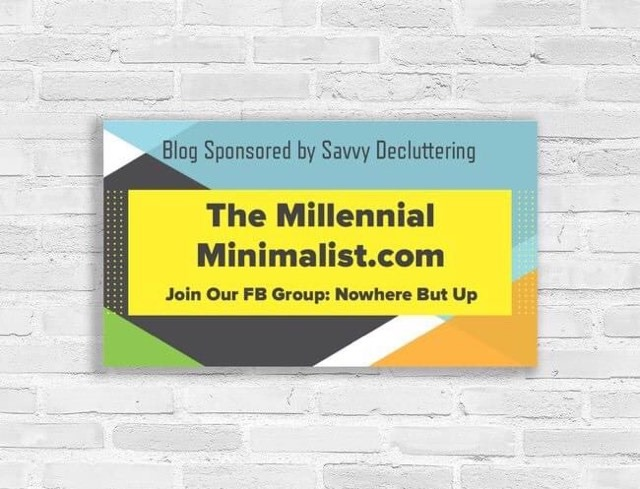
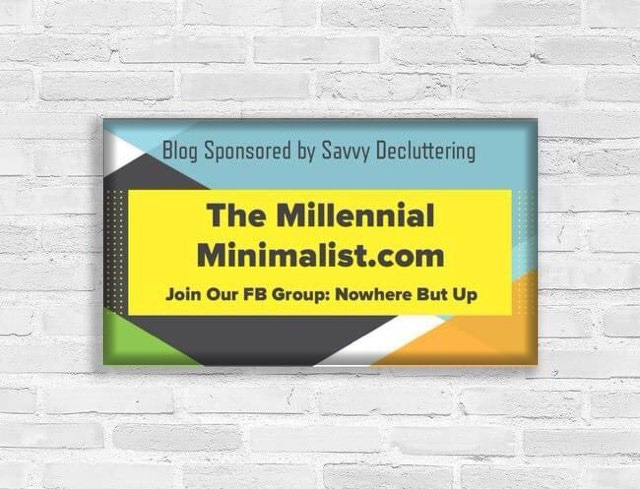

A new movement has started. Minimalism is on the rise with two very strong supporters: Joshua Fields Millburn and Ryan Nicodemus. They provide their followers with a few life-altering ideas such as "How might you be better with less?"(Joshua Fields Millburn). The history of Minimalism is richly steeped in World War II with many new items being created for the war efforts. Convenience and quantity of products became popular at the time. There are hundreds of people following this movement to throw off the shackles of this period of consumption.
Joshua Millburn was inspired by many different people to live a life with less like his predecessor Colin Wright. His thoughts are very provocative, and his dream is to live a life with more meaning. Josh and his best friend, Ryan Nicodemus, are challenging the American Dream. They disclaim it, calling it, "unshakeable discontent." In fact, they disclaim several common job practices:
- accruing debt with credit cards
- working in 'cubical farms'
- working late in an office
- clocking in for work
The Millionnaire Next Door -A book from 1990. 1st books to make a point that Millionaires are not high spenders. Overspent American -American Economists study the rise of overconsumption in America. Six names: Colin Wright(Owns 51 items, extreme minimalism), theMinimalists(Most popular promoters), Leo Babauta(Minimalist families, 6 kids), Joshua Becker(religion and minimalism), Rob Greenfield(0 Waste), Courtney Carver(Health, Multiple Sclerosis), Dave Ramsey(Financial Lifestyle is similar to some Minimalism ideas) Whoever had the best ideas were copied.(Savannah Robbins) outline: intro. minimalism is... Social Media and blogging and online influencers how it has spread to the American population (and world???) Which kinds of people are a part of this movement? Environmentalist minimalists(NY made plastic straws illegal) Where you can go to start learning about minimalism, and explore the movement that the Minimalists have started.   conclusion